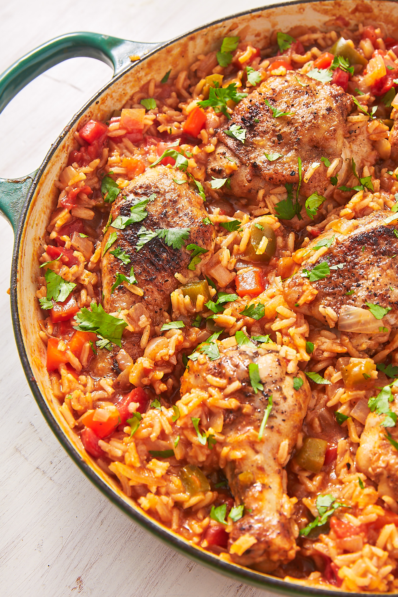

Arroz Con Pollo

Description
Want something awesome for dinner but don't want to spend your entire evening cooking and cleaning? Arroz con
pollo
(chicken with rice in Spanish) is the the perfect recipe. It's an easy one-pot meal that doesn't taste like one,
and it
tastes even better as leftovers.
Ingredients
- 3 lb. bone-in, skin-on chicken thighs and drumsticks
Kosher salt
- Freshly ground black pepper
- 2 tsp. ground cumin
- 1 tsp. dried oregano
- 1 tsp. garlic powder
- 1/2 tsp. cayenne pepper
- 3 tbsp. extra-virgin olive oil
- 1 large onion, chopped
- 2 bell peppers, chopped
- 4 cloves garlic, minced
- 2 tbsp. tomato paste
- 1 c. long-grain rice
- 2 c. low-sodium chicken broth
- 1 (14-oz.) can diced tomatoes
- 1 bay leaf
- Freshly chopped cilantro, for garnish
Steps
- Pat chicken dry with paper towels, then season all over with salt and pepper. In a small bowl, combine
cumin, oregano,
garlic powder, and cayenne. Rub mixture into chicken.
- In a large skillet over medium-high heat, heat oil. Add chicken and cook until golden, 5 minutes per side.
Remove
skillet and reserve on a plate.
- To same skillet over medium heat, add onion and pepper. Cook until soft, 5 minutes. Add garlic and cook
until fragrant,
1 minute more, then stir in tomato paste.
- Add rice and cook until well coated and toasted, 3 minutes. Pour in chicken broth and diced tomatoes, and
bay leaf,
stirring up any bits from bottom of pan. Bring to a boil, then add chicken back to skillet. Reduce heat and
let simmer,
covered, until chicken is cooked through and rice is tender, 30 minutes. Stir occasionally to make sure rice
is not
sticking to bottom of pan. Add more water or broth as necessary.
- Remove bay leaf and serve with cilantro.